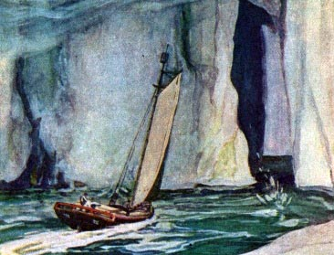

Sacred Texts Earth Mysteries
Buy this Book at Amazon.com
|  | The Smoky Godby Willis George Emerson[1908] |
This is another classic fictional hollow earth adventure. The narrator, Olaf Jansen, is a Norwegian who sails with his father deep into the northern ice. There they sail over the lip of the hollow earth, and into the inner world, lit by a dim central sun (the 'smoky god' of the title). The inhabitants are an advanced race of giants who have electricity, monorails, and extremely long lifespans. The travelers return to the surface through the Antarctic, and as is usual in this genre, lose everything which could confirm their tale on the return voyage. The author, Willis George Emerson (1856-1918), was an American novelist; none of his other books appear to be on esoteric themes.
Production Notes: The text of this book has been available through Project Gutenberg since 2002. This etext is a new scan from a first edition, and includes all the illustrations, which were omitted in the PG text.--J.B. Hare, December 19, 2008.